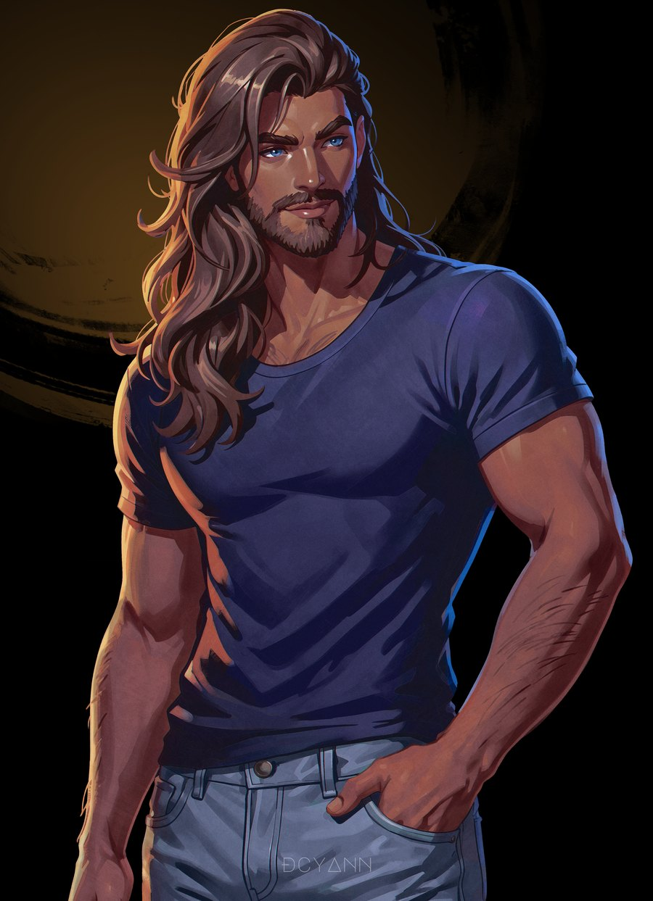

Illustration by DCyann
Identité
- Race
- Hyurgoth
- Âge
- 39 ansNé le 29e soleil de la 5e lune astrale
- Origine
- Ala Mhigo · Werlyt
- Métier
- Émissaire de la République de Werlyt
Co-responsable des ouvrages du Grand Bazar
Apparence
À compléter.
Caractère
À compléter.
Activités
Passions et engagements
- Pratique quotidienne de la méditationHéritée de la tradition des moines d'Ala Mhigo et du culte de Rhalgr
- Mécanicien passionné, amoureux des motosFier détenteur de plusieurs modèles qu'il bricole et entretient sur son temps libre
- Engagé auprès de l'association « Un vœu pour les enfants »Aide les enfants malades ou en situation précaire à réaliser leurs rêves
Lieux fréquentés
- Le Grand BazarTous les jours et soirs de la semaine
- GridaniaPlusieurs fois par semaine
- Ala MhigoUne fois toutes les deux semaines (les mercredis)
- RocasternesUne fois toutes les deux semaines (les lundis)
Ce qu'on raconte
- « Il serait capable de compléter des casse-tête en des temps records. »
Relations
Amours
- Yasmeen Al'IksirPartenaire
Famille
- Nerina SilvershardMère
- Wendel Silvershard †décédéPère
- Maren AshmeadowBeau-père
- Livia AshmeadowDemi-sœur
Amitiés
- Cillien TerabanBro du Bazar
- Hrafna EryutAmie de longue date
Professionnelles
- À compléter
Compagnons
Aucun compagnon
Fiche de jeu Cliquer pour révéler
- PV8
- Points de destin—
- Équipement—
Statistiques
- Constitution
- +1503 pts
- Force
- +1503 pts
- Dextérité
- +501 pt
- Agilité
- +1002 pts
- Intelligence
- +501 pt
- Érudisme
- +501 pt
- Charisme
- +1002 pts
Compétences
- AthlétismeSpécialiste · 3 pts
- +500
- Méditation et concentrationSpécialiste · 3 pts
- +500
- Mécanique (magitek)Amateur · 2 pts
- +300
- NégoceApprenti · 1 pt
- +100
- CuisineApprenti · 1 pt
- +100
Maîtrises d'arme
- Poings (monial)
- Spécialiste
- Jambes (monial)
- Spécialiste
- Tonfa
- Amateur
- Armes-poings
- Amateur
Résistance
- +300Mental d'acier
Malus
- −300Les coups utilisant beaucoup d'éther peuvent le fatiguer rapidement et, sans potion, nécessiter du repos et/ou entraîner une baisse de la condition physique.
- −300Sensibilité aux odeurs nauséabondes et à la banane : entraîne a minima des réflexes vomitifs et au maximum des vomissements et des maux de tête.
- −300Si des équipiers ou des personnes vulnérables sont en danger, il prendra les risques nécessaires à leur sauvetage et ne fuira pas.